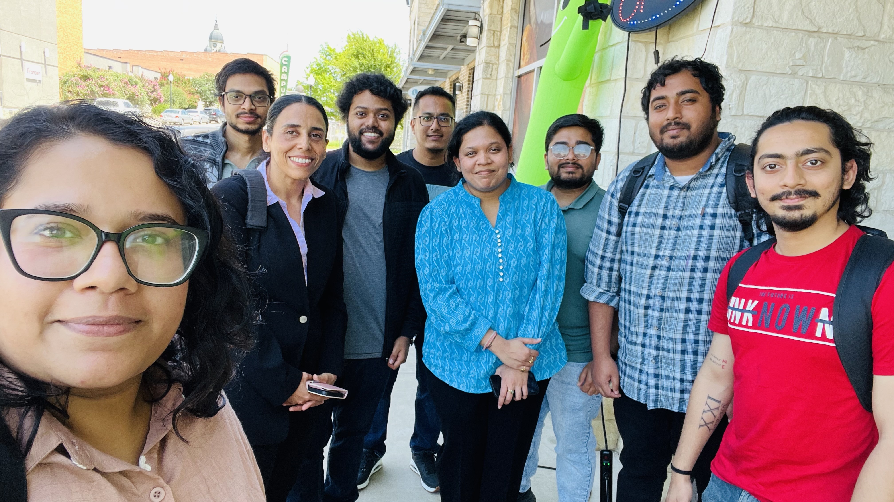
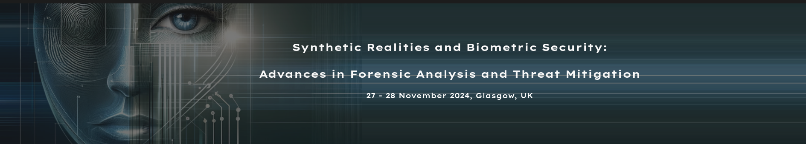
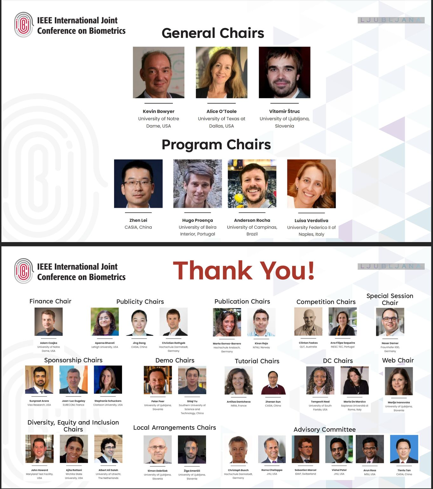
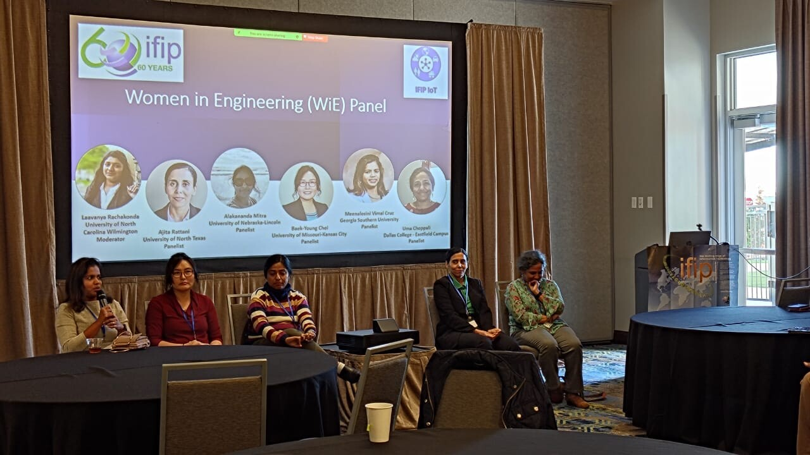
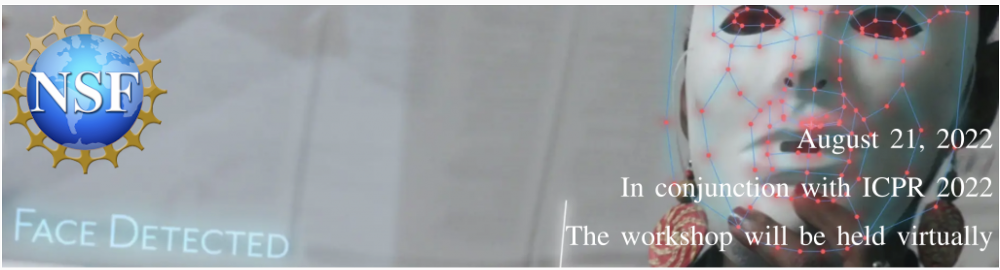
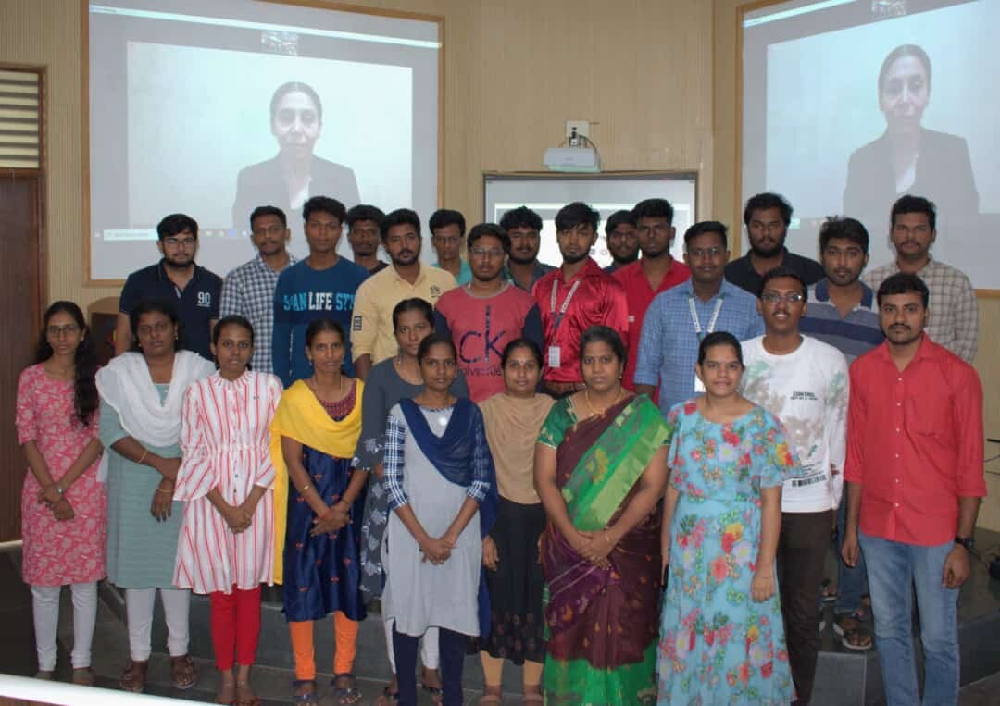
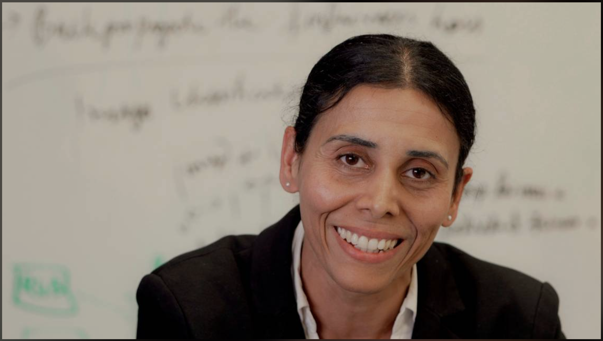

Keynote Speaker
Dr. Rattani is giving keynote in transformative 12-day Online Faculty Development Programme on “𝗜𝗻𝗻𝗼𝘃𝗮𝘁𝗶𝗼𝗻𝘀 𝗶𝗻 𝗙𝗼𝗿𝗲𝗻𝘀𝗶𝗰 𝗦𝗰𝗶𝗲𝗻𝗰𝗲: 𝗧𝗵𝗲 𝗥𝗼𝗹𝗲 𝗼𝗳 𝗠𝗟, 𝗗𝗟, 𝗮𝗻𝗱 𝗕𝗶𝗼𝗺𝗲𝘁𝗿𝗶𝗰𝘀 𝗶𝗻 𝗖𝘆𝗯𝗲𝗿𝘀𝗲𝗰𝘂𝗿𝗶𝘁𝘆”, jointly organized by the CSE Department of National Institute of Technology Delhi and Electronics and ICT Academy, Indian Institute of Information Technology, Design and Manufacturing, Jabalpur, under the prestigious Ministry of Electronics and Information Technology initiative by the Government of India. Dates: September 11–24, 2025 | Time: 5:30 PM – 8:30 PM (Tentative)

Team Lunch
Our entire research group gathered for a lively team lunch, enjoying good food and great conversations while celebrating Parth Bhanderi's farewell party and wishing him the best for his next chapter.
Workshop at BMVC 2024
Dr. Rattani organized a workshop titled "Synthetic Realities and Biometric Security: Advances in Forensic Analysis and Threat Mitigation" at BMVC, Glasgow, UK, 2024.
Moderator
Dr. Rattani moderated a panel on "Bridging Past & Future: Insights & Stories from CSE Alumni" at The UNT Department of Computer Science & Engineering, in association with
Women in Computing - UNT,
Society of Women Engineers - UNT, and
ACM-W: ACMs Women in Computing - UNT.
Present: Bridging Past & Future: Insights & Stories from CSE Alumni
Chair at IEEE IJCB 2023
Dr. Rattani served as diversity, equity and inclusion chair at IEEE IJCB 2023!
Panelist
Dr. Rattani served as panelist at Women in Engineering (WiE) at University of North Texas IFIP IoT.
Poster presentations
VCBSL research group members Vinaya Sree and Madhurika participated in Research Day poster competition and presented their research on Deepfakes and Natural Disaster Assessment on Research day at UNT with their posters.
Talk on Deep Fakes
Talk on the impact of Deep Fakes to Older at Deep Fake Moon Light Event at Wichita State University. Read the feature story in the Wichita Business Journal here

Panelist
Dr. Rattani is invited as speaker (panelist) at FedID conference in Georgia,Atlanta to talk on Fairness of AI. Read more about this
Talk on Bias and Fairness of AI
Dr. Rattani delivered a talk on "Bias and Fairness in AI: An Application to Biometrics" at IEEE SPS School on Advances in Biometrics organized by Computer Vision and Biometrics Laboratory at IIIT Allahabad.
Workshop at ICPR 2022
Dr. Rattani organized a workshop titled "Understanding and Mitigating Bias of Biometrics System" at ICPR, Montreal, 2022.
Invited Speaker on Bias and Fairness of AI
Talk on Bias and Fairness of Biometrics System to Researchers at Dept. of CSE, IIITD&M Kancheepuram, India
Alternative Facial Recognition Technology
Facial recognition is a growing business. But the technology has drawbacks. Dr. Rattani has won a grant to research a better alternative. Researcher Dr. Rattani working on alternative to facial recognition technology.
NSF Award
NSF Award for development of demographically Fair Ocular based recognition system.
